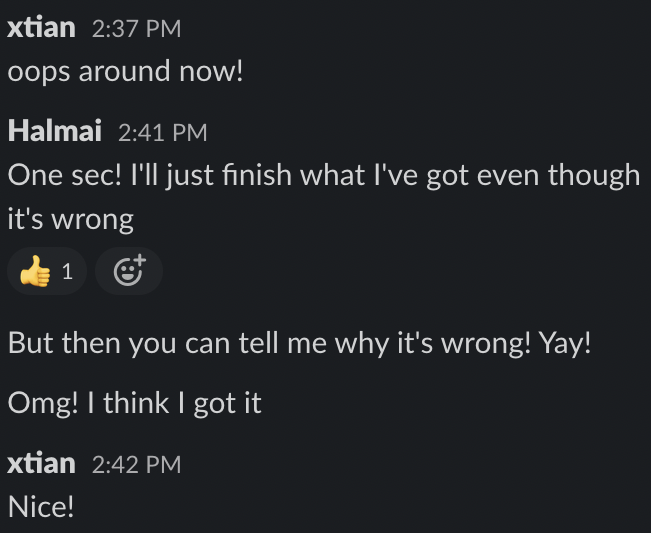

I think I can combine these two instances, although I’m not sure I can refer to any of my methods as ‘elegant’ just yet. However, I was proud of myself for unknowingly using a good problem solving technique!
During Sprint 3, I was working through the Intro to JavaScript challenge and had been progressing pretty well for my level. I reached the final question in JavaScript conditionals, where we were told not to use an if/else statement and to use a switch statement instead. I did some research on switch statements and although I understood what they were and when they should be used, I kept looking at the problem and not feeling confident on where to start.
I’d checked Slack but no one had asked a question in regards to it which confirmed that it may not be as complicated as I felt it was. I probably should have taken a short break (it was reaching a point in the afternoon where my brain likes to switch off), but it was the last question in the section and I was determined to figure it out. I felt frustration building and messaged my brother who has excellent knowledge of JavaScript and could explain how to execute them in a way I might understand, but his status was telling me he was away from his desk.
I figured it could be a while until he got back to me, and I was already growing embarrassed about the empty line where my code should’ve been. So I wanted to order my thoughts, be able to describe the problem to him clearly and also tell him what I’d attempted(which was nothing at this point). So I cleared my mind, re-read the question and resources, and wrote out what I thought it could be, but still thinking I was off. He messaged me back in that very moment. I console logged it and it was correct!
He called me, to debrief and discuss, and told me the method I'd used was pretty much The Rubber Ducky method! It was comforting to hear that him and his workmates still use it often at their level. I will definitely be getting myself a rubber ducky for my workspace to explain things to.
Pseudocode is a technique of writing programming code in plain English to be read by humans(as in, yourself and other programmers). It’s written as a simple step by step process as a comment in your code. Your computer won’t pay attention to it but it can be extremely helpful when writing trickier code, as it breaks down a project into smaller more manageable steps and also keeps you focused on what you wanted the code to achieve.
When first hearing about pseudocode I was like “No”. It sounded like too much typing, a waste of time and I thought having more words in my editor would stress me out, leading to confusion. I used it plenty of times during the Katas challenges, and found it super helpful for the reasons I outlined above, and also I didn’t have to keep checking the Sprint curriculum to confirm I was on track. It will be helpful when collaborating with others too.
Pretty self explanatory.
I am definitely not shy to jump in and try something I think might work. What I do need to work on is actually noting down what I’ve tried, so I’m not just mashing my keyboard with the same incorrect attempt.
The idea is that when a programmer has an issue with their code, they should explain the issue to a rubber duck. Often, the act of explaining the problem step by step will cause the solution to present itself.
I’ve been using the rubber ducky method unknowingly since starting at EDA. Unfortunately, I don’t have a physical rubber ducky just yet, but my brother, cat and partner have all been excellent stand ins. I even rubber ducky’d to myself in the mirror once.
Maybe I just like the sound of my own voice, or maybe it’s the adorable name this problem solving technique has! Also this concept shouldn’t just be confined to programming- rubber ducking can definitely be applied to other areas in life.
In programming these can look really aggressive and intimidating. I read them all as red messages saying “YOU SUCK!”.
When you get over that, error messages contain important information that can guide you toward what needs to be amended. Whether it’s a simple syntax error or something bigger, paying attention to error messages can lead you to a solution.
Console logging is a very basic way to diagnose and troubleshoot minor issues in your code. The console. log() is a function in JavaScript which is used to print any kind of variables defined before in it or to just print any message that needs to be displayed.
I first approached console.logging similar to the way I did pseudocode. It seemed pointless when I could refresh the page to see what had changed. I now know that it’s an extremely helpful developer tool and allows you to see if the code is executing correctly at any stage.
My two biggest pet-peeves are when people interrupt what I’m doing to show me a YouTube video, and hearing people hypothesise over something that could be easily Googled.
I’ve used it multiple times daily since beginning EDA and while it’s extremely helpful, occasionally in programming it can lead you down a rabbit hole. The curriculum included strategic ways to Google things which has helped, and there’s a few sites I look for on the results page(Stackoverflow, MDN, W3, Geeks for Geeks) which usually make it faster to find exactly what I’m searching for.
I’ve learnt so much from my peers in the Foundations Slack channel! Although I’ve only made my own ‘help post’ once or twice, I’m super thankful to the others that are ahead of me for posting their issues, and to the people that assist them. My facilitator Emily is awesome, so far I’ve mostly relied on her for moral support and confirmation I’m on the right track, but I wouldn’t hesitate to message her if I’d exhausted my other problem solving avenues or needed further clarity on something.
I knew there was something I was missing. I'm definitely not prioritising reflection enough. I think its a combo of sometimes not being certain my methods are the best/correct, and also experiencing burn out by the end of the day when studying.
I usually reflect on my own work when I have to(I reflected o Sprint 3 before starting Katas this sprint). I think I should try to reflect on what I’ve learnt in the middle of the study day, perhaps before or after I take a meal break. Thanks for the reminder!